Softwares
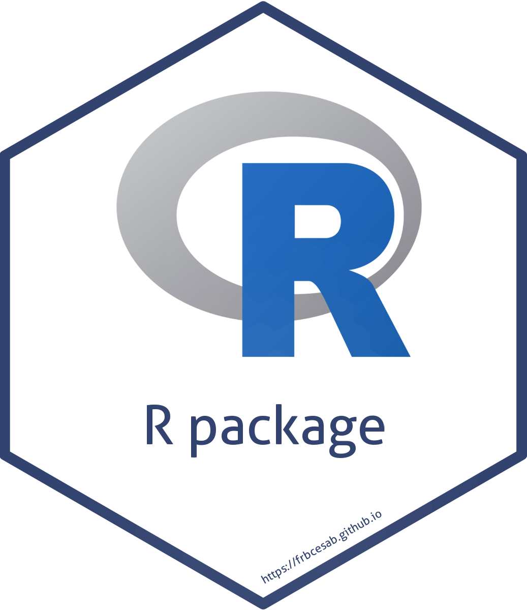
faircitations
The goal of the R package faircitations is to provide a user-friendly way to compute the non-profit and academic friendly ratio of the bibliographic reference list before submitting a manuscript for peer review.
Nicolas Casajus (maintainer)
https://frbcesab.github.io/faircitations
https://github.com/frbcesab/faircitations
planner
The goal of the R package planner is to create annual, monthly, and weekly calendars as PDF files in the A4 paper format. Various information can be added: events, holidays, special days, moon phases, etc.
Nicolas Casajus (maintainer)
https://frbcesab.github.io/planner
https://github.com/frbcesab/planner
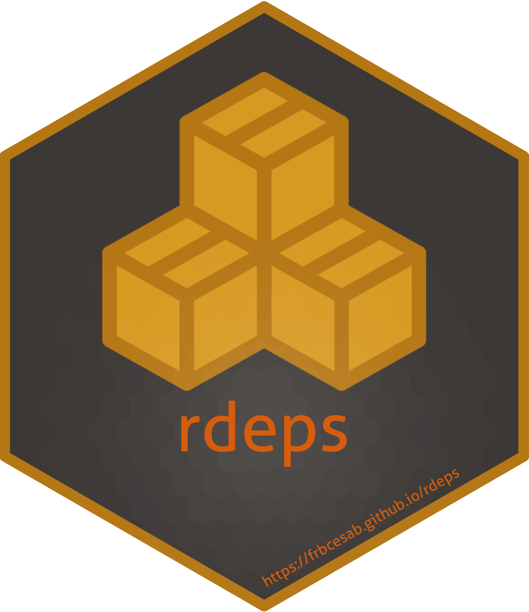
rdeps
The goal of the R package rdeps is to provide a tool to identify all external packages used in a project (package, compendium, website, etc.) and to list them in the DESCRIPTION file.
Nicolas Casajus (maintainer)
https://frbcesab.github.io/rdeps
https://github.com/frbcesab/rdeps

rwosstarter
The R package rwosstarter is a client to the Web of Science Starter API. It is dedicated to retrieve metadata (including times-cited counts) of scientific publications matching search terms. It can be used to run a literature synthesis.
Nicolas Casajus (maintainer)
https://frbcesab.github.io/rwosstarter
https://github.com/frbcesab/rwosstarter
chessboard
The package chessboard provides functions to work with directed (asymmetric) and undirected (symmetric) spatial (or non-spatial) networks. It implements different methods to detect neighbors, all based on the chess game (it goes beyond the rook and the queen) to create complex connectivity scenarios.
This work is part of the CESAB working group BRIDGE.
Nicolas Casajus (maintainer)
https://frbcesab.github.io/chessboard
https://github.com/frbcesab/chessboard
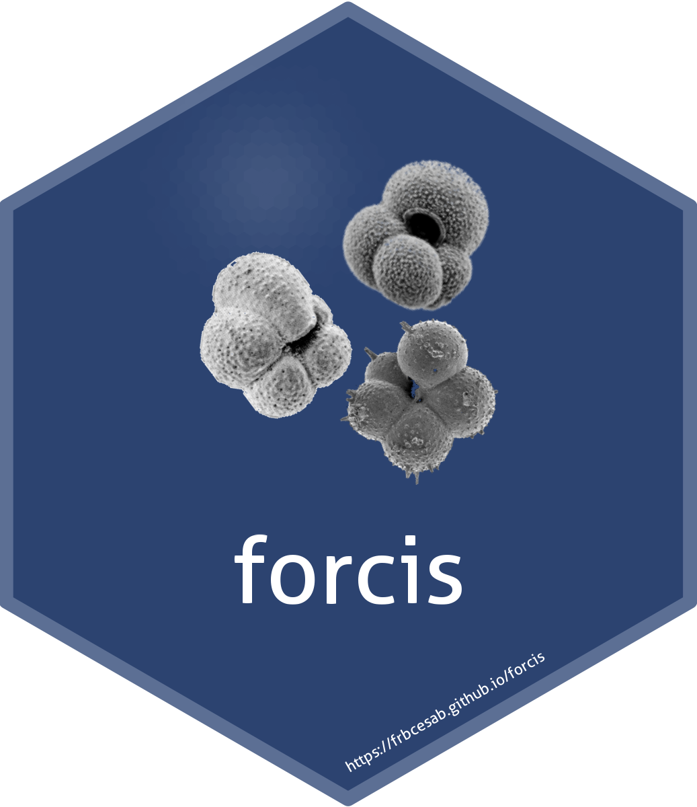
Nicolas Casajus (maintainer)
https://docs.ropensci.org/forcis
https://github.com/ropensci/forcis

funbiogeo
The package funbiogeo aims to help users with analyses in functional biogeography by loading and combining data, computing trait coverage, as well as computing functional diversity indices, drawing maps, correlating them with the environment, and upscaling assemblages.
This work is part of the CESAB working group FREE.
Matthias Grenié (maintainer)
https://frbcesab.github.io/funbiogeo
https://github.com/frbcesab/funbiogeo
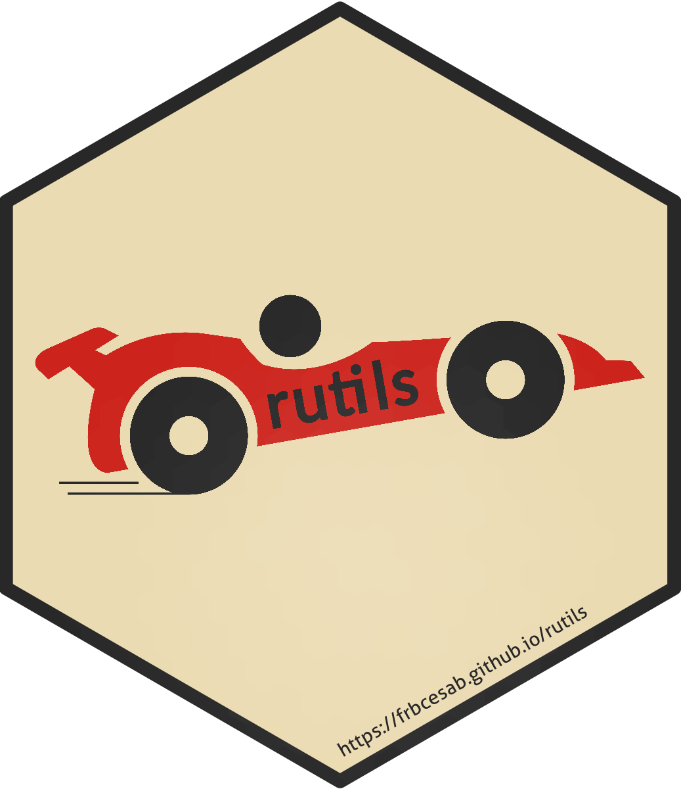
rutils
The R package rutils is a collection of R functions commonly used in FRB-CESAB projects. See the README for an overview of the features.
Nicolas Casajus (maintainer)
https://frbcesab.github.io/rutils
https://github.com/frbcesab/rutils
zenodor
The goal of the R package zenodor is to provide an CLI interface to the Zenodo API to list and download files from a Zenodo repository. This package works with open and restricted access repositories. For restricted repository a token is required.
This work is part of the CESAB working group SYNTREESYS.
Nicolas Casajus (maintainer)
https://frbcesab.github.io/zenodor
https://github.com/frbcesab/zenodor
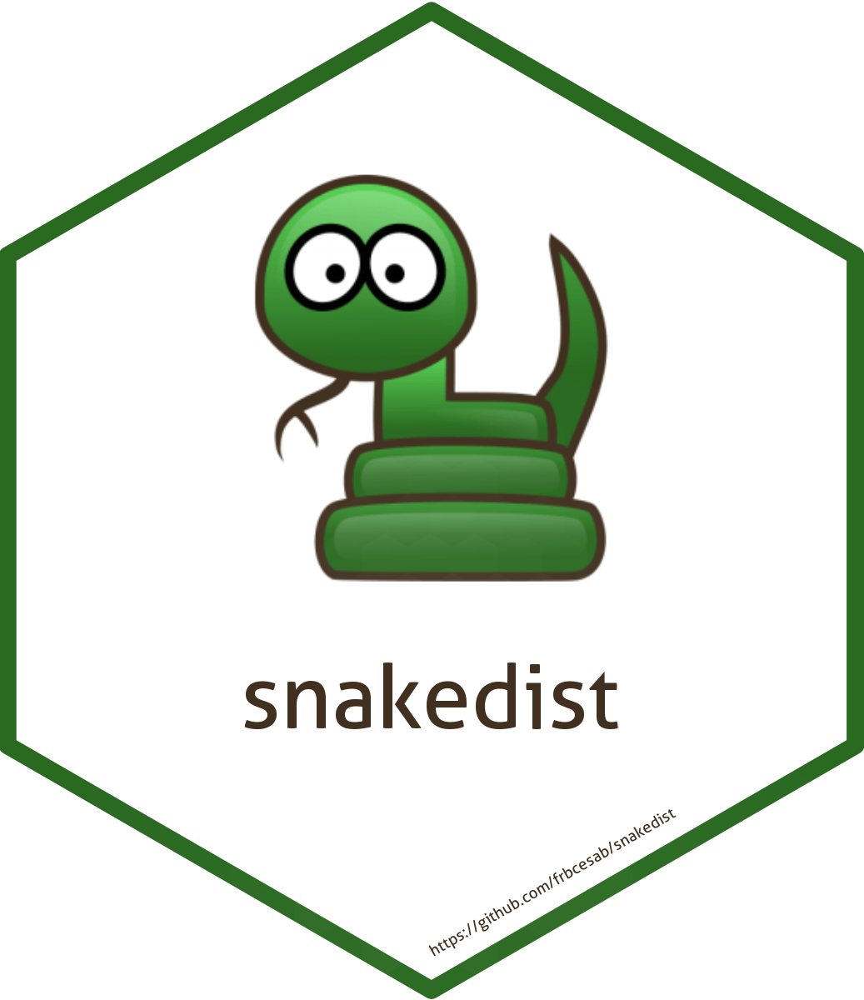
snakedist
The goal of the R package snakedist is to compute distance between pair of points (survey locations) along a linear shape (e.g. a river, a road, etc.). Note that this package works even if the points are not exactly on the line.
This work is part of the CESAB working group BRIDGE.
Nicolas Casajus (maintainer)
https://frbcesab.github.io/snakedist
https://github.com/frbcesab/snakedist
zoteror
The goal of the R package zoteror is to retrieve references metadata stored in the Zotero local database (SQLite file).
Nicolas Casajus (maintainer)
https://frbcesab.github.io/zoteror
https://github.com/frbcesab/zoteror
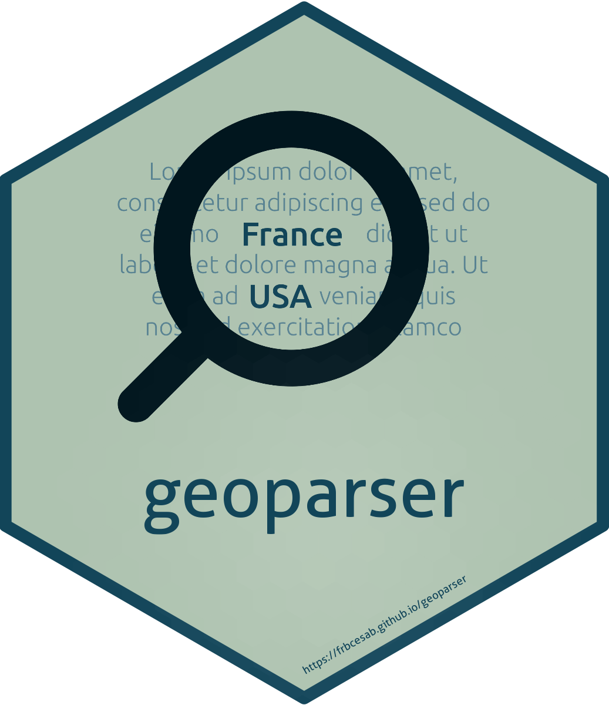
geoparser
The goal of the R package geoparser is to detect country names in a text document (e.g. a PDF file imported with the R package pdftools).
Nicolas Casajus (maintainer)
https://frbcesab.github.io/geoparser
https://github.com/frbcesab/geoparser

rbibtools
The R package rbibtools imports, cleans, and exports .bib files (BibTeX references) exported by common references management software (e.g. Mendeley, Zotero).
Nicolas Casajus (maintainer)
https://frbcesab.github.io/rbibtools
https://github.com/frbcesab/rbibtools
papieRmache
papieRmache is an R package for chewing up papers, spitting out the information you don’t want, keeping the information you do.
Andrew Helmstetter (maintainer)
https://ajhelmstetter.github.io/papieRmache
https://github.com/ajhelmstetter/papieRmache
robinmap
The goal of the R package robinmap is to map World countries in the Robinson projection system (or others CRS) centered on a different meridian than Greenwich. It uses Natural Earth layers as base maps.
Nicolas Casajus (maintainer)
https://frbcesab.github.io/robinmap
https://github.com/frbcesab/robinmap
messages
The R package messages is a collection of functions to print colored messages in the R console using the packages cli and crayon. This package is strongly inspired from the functions ui_*() of the package usethis.
Nicolas Casajus (maintainer)
https://frbcesab.github.io/messages
https://github.com/frbcesab/messages
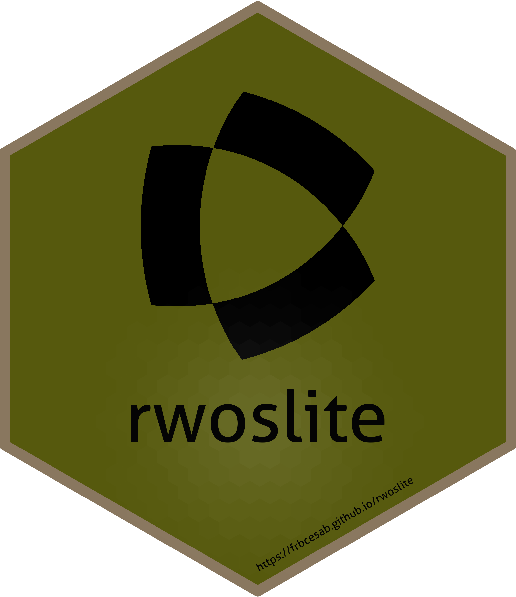
rwoslite
The R package rwoslite is an interface to the Web of Science Lite API. It allows users to write complex requests to retrieve scientific publications metadata.
Nicolas Casajus (maintainer)
https://frbcesab.github.io/rwoslite
https://github.com/frbcesab/rwoslite
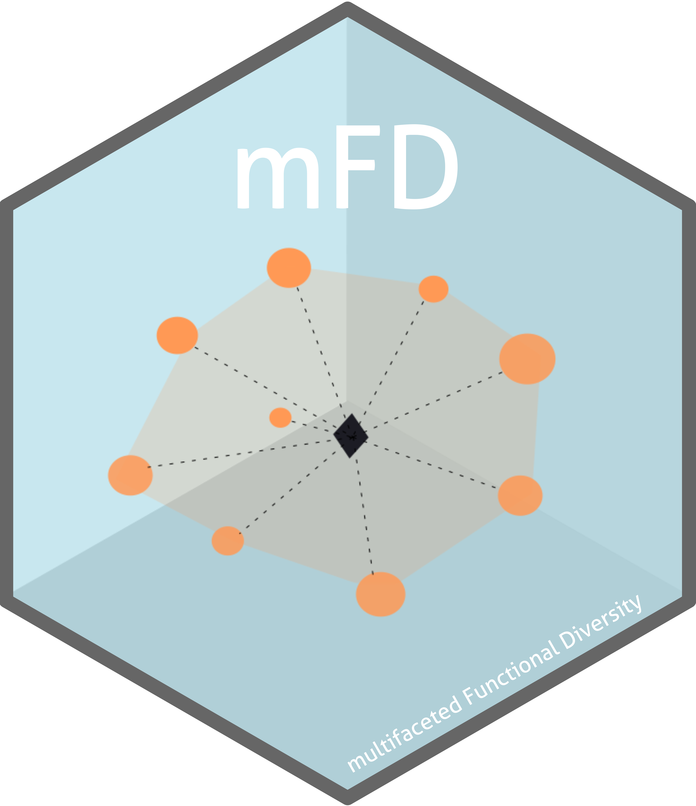
mFD
The mFD package provides a user friendly interface to compute a global assessment of functional diversity by gathering computation of alpha and beta functional indices. As no package before, it guides users through functional analysis with one function per action to complete, several arguments that can be changed and allows personalized graphical outputs.
This work is part of the CESAB working group FREE.
Camille Magneville (maintainer)
https://cmlmagneville.github.io/mFD
https://github.com/cmlmagneville/mFD

popbayes
The goal of the R package popbayes is to infer trends of one or several populations over time from series of counts. It does so by accounting for count precision (provided or inferred based on expert knowledge, e.g. guesstimates), smoothing the population rate of increase over time, and accounting for the maximum demographic potential of species. Inference is carried out in a Bayesian framework.
This work is part of the CESAB working group AFROBIODRIVERS.
Nicolas Casajus (maintainer)
https://frbcesab.github.io/popbayes
https://github.com/frbcesab/popbayes
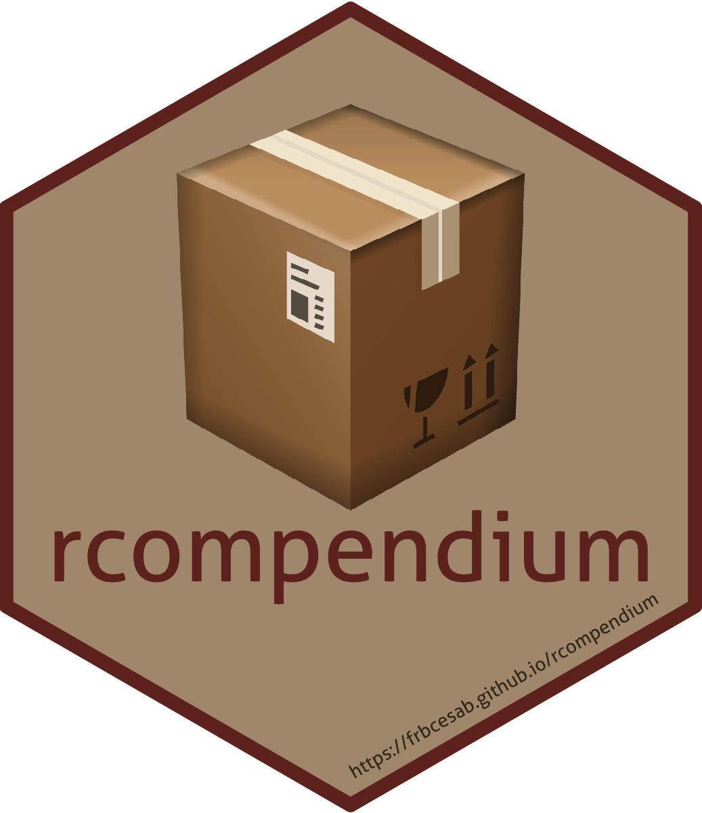
rcompendium
The aim of the R package rcompendium is to make easier the creation of R package or research compendium (i.e. a predefined files/folders structure) so that users can focus on the code instead of wasting time organizing files. A full ready-to-work structure is set up with some additional features.
Nicolas Casajus (maintainer)
https://frbcesab.github.io/rcompendium
https://github.com/frbcesab/rcompendium

worldpa
worldpa is an R client to the World Database on Protected Areas (WDPA) API that allow users to download spatial geometries of protected areas for world countries.
Nicolas Casajus (maintainer)
https://frbcesab.github.io/worldpa
https://github.com/frbcesab/worldpa
algaeClassify
The aim of the package algaeClassify is to determine phytoplankton functional groups based on functional traits. It allows to verify accepted taxonomic nomenclature of phytoplankton species, assign species to functional group classifications, and manipulate taxonomic and functional diversity data.
This work is part of the CESAB working group GEISHA.
Vijay P. Patil (maintainer)
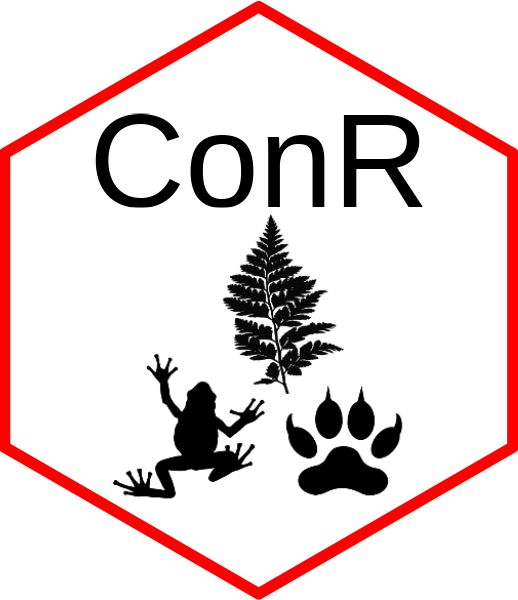
ConR
ConR is an R package to compute multi-species estimation of geographical range parameters for preliminary assessment of conservation status following Criterion B of the International Union for Conservation of Nature (IUCN).
This work is part of the CESAB working group RAINBIO.
Gilles Dauby (maintainer)
https://gdauby.github.io/ConR
https://github.com/gdauby/ConR
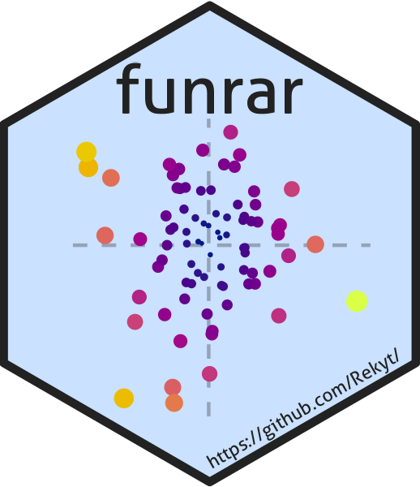
funrar
funrar is an R package to compute functional rarity indices. It quantifies how species are rare both from a functional and an extent point of view. Various indices can be computed using both regional and local information.
This work is part of the CESAB working group FREE.
Matthias Grenié (maintainer)
https://rekyt.github.io/funrar
https://github.com/Rekyt/funrar